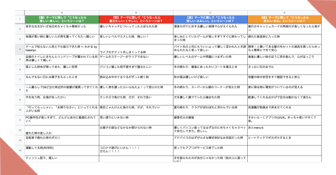
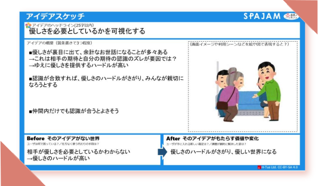
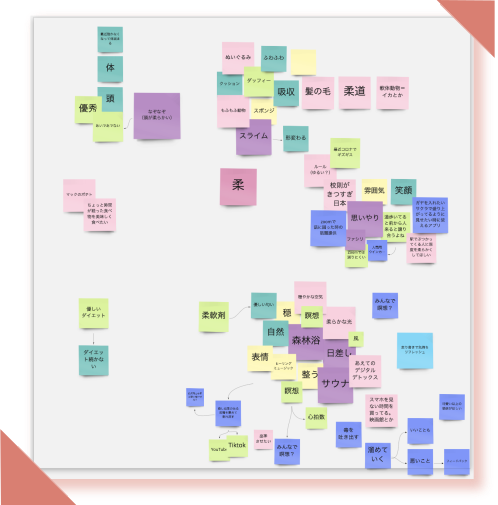
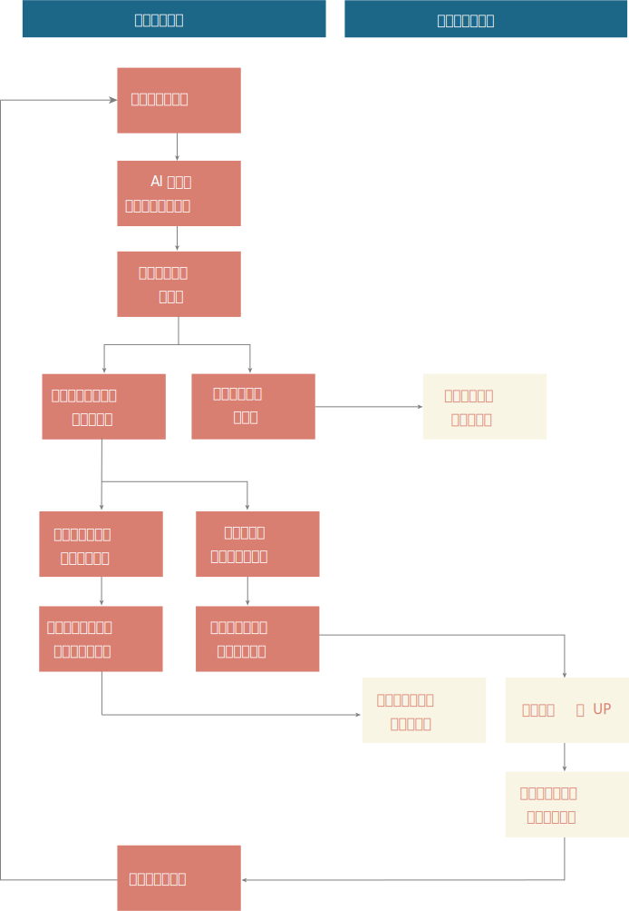
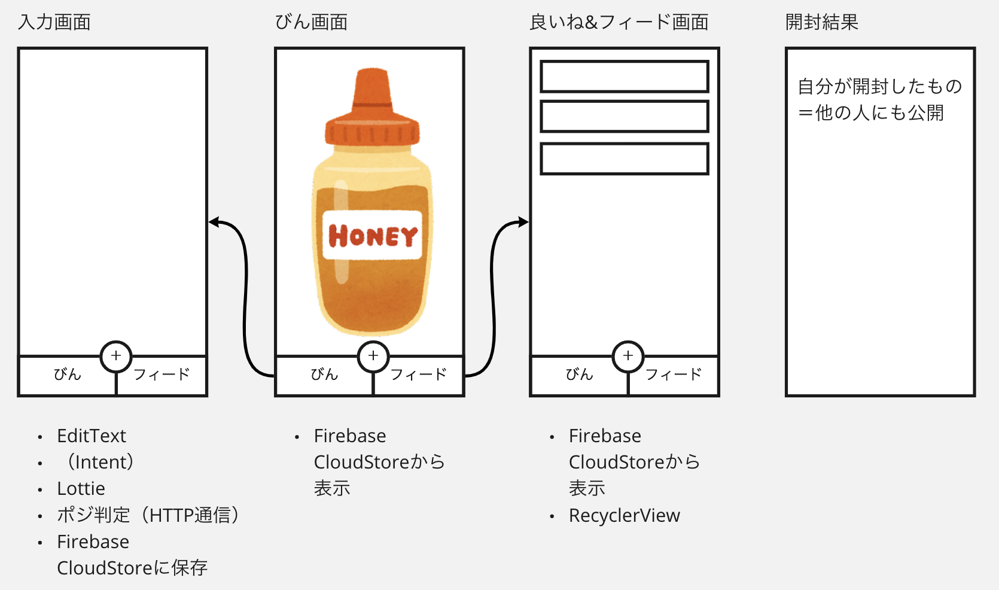
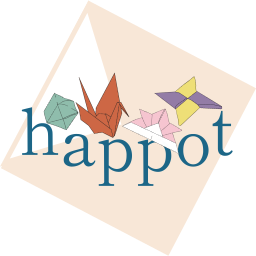
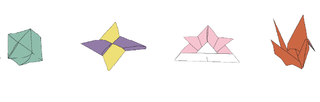
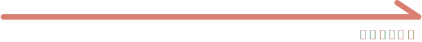

SPAJAM2021第4回予選大会で制作したアプリで、優秀賞をいただきました。
制作期間： 2日
制作担当領域 : 5人でアイデア出し、ユーザー体験設定、UIのモックまで一緒に行い、その後担当領域を分けて実装を行いました。
私はデザイナーとデザインについてコミュニケーションをとり、エンジニアとしてアプリUIの実装を担当しました。
SPAJAMとは？
スキル向上のための競技、交流する場を提供する
国内最高峰のアプリケーションハッカソン
予選大会はオンラインで開催され、私たちは第4回大会にインターン先の仲間とチームを組み、出場しました。
審査Point
- ・テーマ性
- テーマに沿って利用者と共感できる価値を提供できているか
- ・アイデアのユニークさ
- ・実装力
- きちんと動作するか、UI/UX及び技術的要素が高い水準にあるかどうか
- ・プレゼン力
ハッカソンテーマ
やさしいアプリを作る
アイデアの発散
「やさしい」というテーマに対して、自分の日常体験から生まれる心の動きの具体的なシーンを喜怒哀楽に分けて書き出しました。 そこからネガティブを解消するには？、ポジティブを拡大させるには？という観点で具体的なアプリのアイデアを書き出していきました。



やさしいってなんだろう・・・？
話し合いが停滞する時も・・・
沢山のアイデアは出したものの、テーマの幅広さ、実現可能性からしっくりくるものがなく、メンバー全員悩みすぎて会話も最初の勢いがなくなってしまいました。 そこで、空気を変えなくては！と思い、やさしいは「柔しい」とも書くことができることから、「柔」という言葉から思いつく言葉を書いてみよう！と提案しました。 これをきっかけに再び話し合いは活性化し、最終的に作ったアプリのアイデアのきっかけをつくることができました。
ペルソナ
年齢：22歳 就活生
性別：女性
居住地：東京 一人暮らし
近況：コロナで友達に実際会うことがなくなっている。
就活がうまくいかなくて悩み中。SNSに疲れてきている。
ペルソナの理想
自己肯定感をあげたい
リフレッシュしたい
理想との差分
SNSを見て余計に自己肯定感が下がってしまっている
遊びに行って気分転換もできない
アプリで解決すること
自分が行ったいいこと、自分の周りに起こったいいことを投稿
→いいことが視覚的に楽しく溜まっていく
→気分UP！
他人からいいねがもらえる
→自己肯定感UP！
自己肯定感を上げることで、他人にも優しくなれるのではないか
その日の「失敗」や「できなかったこと」は一切無視して「できたこと」だけを書き残すことで、自己肯定感を高めることができ、自分を見る視点が肯定的になることで、 自然と他人のよい面が見れるようになり、ポジティブなエネルギーは自分自身の表情や言動もポジティブなものに変化すると述べられている書籍があることもわかりました。
アプリの機能

Point
他人と自分のいいね数を比較することがないので劣等感を感じない

▲ラフUI
役割分担決め
それぞれのメンバーが複数の技術の引き出しを持っており、アプリの企画までは何の言語で実装するか、役割分担を決めずにみんなで話し合いました。最終的な役割分担は以下のようになり、私はAndroidアプリのUI実装を担当しました。 また、デザイナーが作ってくれたUIに対しても思ったことを意見し、デザイナーと実装する上での擦り合わせを行いました。
デザインコンセプト
いいこと集めに遊びごごろを
このアプリの中で自分の身の周りに起こったポジティブな出来事が溜まっていく様子をどのように可視化するかが大切だと考え、 案を出し合った結果、SNSで話題になった「ハッピー貯金」の折り紙をモチーフとしたUIにしました。これにより、ユーザーは安心感を得ることができ、アプリを使いたくなることを狙いとしています。
ロゴ、トンマナ

＃D97F72
＃1C6687
＃F8F5E4
フォント：しっぽり明朝
モチーフが折り紙なので、
和をイメージした配色とフォントに
ポジティブ度によって
溜まる折り紙の見た目が変わる！


溜まる折り紙の見た目が変わる！
いいことを投稿すると
折り紙が溜まっていく！
最終成果物

テーマが抽象的で体験設計に時間がかかり、苦戦しましたが、一連の流れを実装することができました。 ただ、時間がギリギリだったため、実際に触ってみてパーツの大きさが適切であるかなどを議論したり、 インタラクションにこだわることができなかった点が少し心残りでした。
優秀賞受賞！！
11チームの中から優秀賞に選ばれました。講評ではコンセプトから、実装力、クローズドないいね機能、 作り込まれたUIの点でお褒めの言葉をいただきました。
学んだこと
チーム力は大事！
チームのメンバーの中には同じ団体だけれど、私はあまり関わったことのないメンバーもいました。 しかし、みんな普段から団体のメンバーは同じ志を持って活動をしているので、すぐ仲良くなり、会話も活発でチームとしてまとまっている空気を感じました。 また、それぞれが様々な引き出しを持っていてお互い尊敬できるので、長所を掛け合わせ、自分1人では決して作れないものを作ることができました。 SPAJAMを何回も経験している人がいる他チームがある中で、全員が初出場のこのチームで優秀賞という一つの成果を出せたこともこのチーム力があったからだと思います。